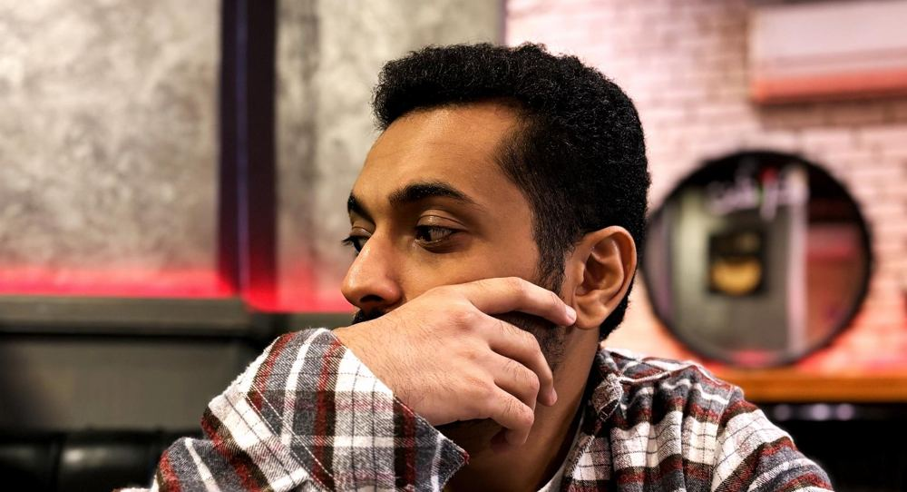

Three projects showing how I frame customer problems, choose a focused product direction, and think about learning and success.

01
Talabyah – A Pharmacy Ordering App
Self-initiated product case study · 2026
Community pharmacists handle medicine shortages with phone calls, paper and Excel. I originated the idea for a B2B ordering app for community pharmacies and, with a friend, ran a survey of pharmacists to guide discovery and the initial approach.
Product decision
Shortage-to-order, chosen over two other candidates (expiry and returns manager, drug search with interactions).
Proposed flow
Log a shortage → compare warehouse and company offers → order in one tap → supplier confirms in the app.
Prototype and learning plan
Built a clickable Arabic and English prototype with Claude and Vercel. Defined input and output metrics with double-down and kill gates for a proposed 4-week pilot.